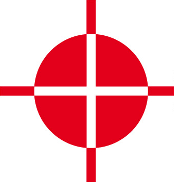
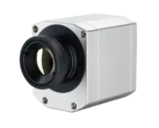
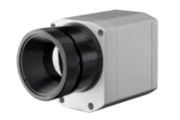
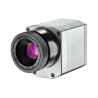
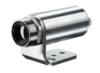
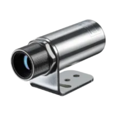
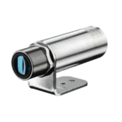
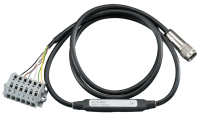
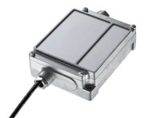

 |
Thermal Camera SDK 10.1.1
SDK for Optris Thermal Cameras
|
The following table gives you a quick rundown of all the features that are currently included or soon to be included in the SDK.
| Feature | Status |
|---|---|
| Fully supported programming languages | C++, C#, Python 3 |
| All Optris cameras supported | ✅* |
| Supported connection types | USB, Ethernet |
| Thermal data | ✅ |
| False color images | ✅ |
| Change temperature range | ✅ |
| Extended temperature range | ✅ |
| Change palette color & scale | ✅ |
| Change focus motor position | ✅ |
| Access to visible frame (PI230) | ❌ |
| Multiple cameras | ✅ |
| Control sensor chip heating | ✅ |
| Normalization (emissivity & transmissivity) | ✅ |
| Process interface (PIF) | ✅ |
| Flag control during runtime | ✅ |
| Temperature referencing with external probe | ❌** |
| Detect connection loss and timeouts | ✅ |
| High precision mode (PI450) | ⬜ |
| RAW data recording for PIXConnect | ❌ |
| Create Optris TIFF files | ❌ |
Legend
| Symbol | Description |
|---|---|
| ✅ | Supported |
| ⬜ | Implemented but not yet tested |
| ❌ | Not supported |
| * | As of Mai 2025 |
| ** | Work in progress |
The SDK is implemented in C++. Besides its native C++ interface the SDK offers bindings to the following languages:
Both bindings offer the full feature set of the C++ API.
All Optris thermal cameras of the PI and Xi series are supported the SDK. These includes as of Mai 2025 the PI 160, PI 400(i), PI 450i, PI 640(i), PI 1M, PI 05M, PI 08M, Xi 80, Xi 400, Xi 410, Xi 440, Xi 640, Xi 1M.
Nearly all of the cameras listed above offer multiple, fixed resolutions and temperature ranges. Their availability depends on the used connection type (USB or Ethernet), available calibrations and on the video formats defined in the formats definition file.
The following tables lists the different video formats for each camera type that can be set in the configuration file:
| Video Format | Temperature Range [°C] | Connection Type |
|---|---|---|
| 160x120 @ 120 Hz | -20 ... 100 0 ... 250 150 ... 900 | USB |

| Video Format | Temperature Range [°C] | Connection Type |
|---|---|---|
| 382x288 @ 80Hz | -20 ... 100 0 ... 250 150 ... 900 | USB |
| 382x288 @ 27Hz | -20 ... 100 0 ... 250 150 ... 900 | USB |
More about the PI 400 on optris.com More about the PI 450 on optris.com

| Video Format | Temperature Range [°C] | Connection Type |
|---|---|---|
| 640x480 @ 32Hz | -20 ... 100 0 ... 250 150 ... 900 | USB |
| 640x120 @ 125Hz | -20 ... 100 0 ... 250 150 ... 900 | USB |
More about the PI 640 on optris.com

| Video Format | Temperature Range [°C] | Connection Type |
|---|---|---|
| 382x288 @ 27Hz | 900 ... 2450 | USB |
| 382x288 @ 80Hz | 950 ... 2450 | USB |
| 764x480 @ 32Hz | 950 ... 2450 | USB |
| 72x56 @ 1000Hz | 1100 ... 2450 | USB |
| 764x8 @ 1000Hz | 1100 ... 2450 | USB |
More about the PI 05M on optris.com
| Video Format | Temperature Range [°C] | Connection Type |
|---|---|---|
| 382x288 @ 27Hz | 575 ... 1900 | USB |
| 382x288 @ 80Hz | 625 ... 1900 | USB |
| 766x480 @ 32Hz | 625 ... 1900 | USB |
| 72x56 @ 1000Hz | 750 ... 1900 | USB |
| 764x8 @ 80Hz | 750 ... 1900 | USB |
More about the PI 08M on optris.com
| Video Format | Temperature Range [°C] | Connection Type |
|---|---|---|
| 382x288 @ 27Hz | 450 ... 1800 | USB |
| 382x288 @ 80Hz | 500 ... 1800 | USB |
| 766x480 @ 32Hz | 500 ... 1800 | USB |
| 72x56 @ 1000Hz | 600 ... 1800 | USB |
| 764x8 @ 80Hz | 600 ... 1800 | USB |
More about the PI 1M on optris.com

| Video Format | Temperature Range [°C] | Connection Type |
|---|---|---|
| 80x80 @ 50Hz | -20 ... 100 0 ... 250 150 ... 900 | USB, Ethernet |
More about the Xi 80 on optris.com
| Video Format | Temperature Range [°C] | Connection Type |
|---|---|---|
| 382x288 @ 27Hz | -20 ... 100 0 ... 250 150 ... 900 | USB |
| 382x288 @ 80Hz | -20 ... 100 0 ... 250 150 ... 900 | USB |
More about the Xi 400 on optris.com

| Video Format | Temperature Range [°C] | Connection Type |
|---|---|---|
| 320x240 @ 5 Hz | 475 ... 1700 | USB |
| 320x240 @ 30 Hz | 475 ... 1700 | Ethernet |
More about the Xi 320 MT on optris.com
| Video Format | Temperature Range [°C] | Connection Type |
|---|---|---|
| 384x240 @ 4.1Hz | -20 ... 100 0 ... 250 150 ... 900 | USB |
| 384x240 @ 25Hz | -20 ... 100 0 ... 250 150 ... 900 | Ethernet |
More about the Xi 410 on optris.com
| Video Format | Temperature Range [°C] | Connection Type |
|---|---|---|
| 640x480 @ 32Hz | -20 ... 100 0 ... 250 150 ... 900 | USB |
| Video Format | Temperature Range [°C] | Connection Type |
|---|---|---|
| 640x480 @ 32Hz | -20 ... 100 0 ... 250 150 ... 900 | USB |
More about the Xi 640 on optris.com

| Video Format | Temperature Range [°C] | Connection Type |
|---|---|---|
| 132x100 @ 20Hz | 450 ... 1800 | USB, Ethernet |
| 396x300 @ 20Hz | 450 ... 1800 | Ethernet |
| 396x8 @ 500Hz * | 550 ... 1800 | Ethernet |
| 396x1 @ 500Hz * | 550 ... 1800 | Ethernet |
More about the Xi 1M on optris.com
*only available for Xi 1M cameras with a firmware revision in the range of [4019, 4199].

The standard PIF is integrated into a cable that ends in a terminal block from which its various pins can be accessed.
Supported by
all cameras except Xi 80, Xi 410 and Xi 1M.
Channels
| Type | Count | Ranges | Maximum | Remarks |
|---|---|---|---|---|
| Analog inputs | 1 | 0 - 10 V | 24 V | Voltages > 10 V register as 10 V |
| Digital inputs | 1 | 24 V | Voltages > 2 V register as high | |
| Analog outputs | 1 | 0 - 10 V | Min. 12 V supply voltage required for 10 V output | |
| Digital outputs | - | |||
| Fail safe | - |
More about the Standard Process Interface on optris.com

The industrial PIF comes in its own industrial grade housing and features current based analog outputs.
Supported by
all cameras except PI 160, Xi 80, Xi 410 and Xi 1M.
Channels
| Type | Count | Output Modes | Maximum | Remarks |
|---|---|---|---|---|
| Analog inputs | 2 | 0 - 10 V | 24 V | Voltages > 10 V register as 10 V |
| Digital inputs | 1 | 24 V | Voltages > 2 V register as high | |
| Analog outputs | 3 | 0 - 20 mA, 4 - 20 mA | ||
| Digital outputs | - | |||
| Fail safe | 1 |
More about the Industrial Process Interface on optris.com
The industrial PIF comes in its own industrial grade housing and features voltage based analog outputs.
Supported by
all cameras except PI 160, Xi 80, Xi 410 and Xi 1M.
Channels
| Type | Count | Output Modes | Maximum | Remarks |
|---|---|---|---|---|
| Analog inputs | 2 | 0 - 10 V | 24 V | Voltages > 10 V register as 10 V |
| Digital inputs | 1 | 24 V | Voltages > 2 V register as high | |
| Analog outputs | 3 | 0 - 10 V | Min. 12 V supply voltage required for 10 V output | |
| Digital outputs | - | |||
| Fail safe | 1 |
The internal PIF is directly integrated into the camera housing.
Supported by
Xi 80, Xi 410 and Xi 1M.
Channels
| Type | Count | Output Modes | Maximum | Remarks |
|---|---|---|---|---|
| Analog inputs | 1 | 0 - 10 V | 24 V | Voltages > 10 V register as 10 V |
| Digital inputs | - | |||
| Analog outputs | 1 | 0 - 20 mA, 4 - 20 mA | ||
| Digital outputs | - | |||
| Fail safe | - |
Stackable PIFs feature like their industrial variants their own industrial grade housings. Up to three stackable PIFs can be connected to same camera at once. Thus, providing the most connectivity of all PIFs.
Supported by
Xi 80, Xi 410 and Xi 1M.
Channels
| Type | Count | Output Modes | Maximum | Remarks |
|---|---|---|---|---|
| Analog inputs | 3 | 0 - 10 V | 24 V | Voltages > 10 V register as 10 V |
| Digital inputs | - | |||
| Analog outputs | 3 | 0 - 10 V, 0 - 20 mA, 4 - 20 mA | Min. 12 V supply voltage required for 10 V output | |
| Digital outputs | 3 | |||
| Fail safe | 1 |